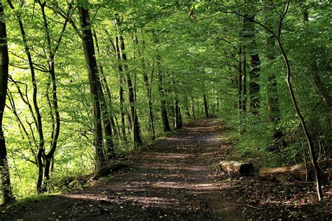
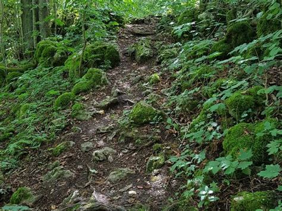

Du entscheidest dich in den Dunlken und dichten wald zu gehen. Während du dem pfad folgst merkst du wie die Bäume und sträucher immer dichter werden. Nach einigen Minuten ereichst du eine fast nicht mehr zu erkennende Kreuzung. Du hast die wahl, vor dir liegen Zwei Wege. Ein Weg breit und noch gut in schuss führt weiter in die Richtung in die Du schon am laufen warst. Der Zweite ist fast gänzlich von der natur zurückerobert worden und führt abseits tief ins innere des Walds. Für welchen Weg entscheidest du dich abenteurer?


Folge weiter dem breitem Weg
Folge dem Trampelpfad